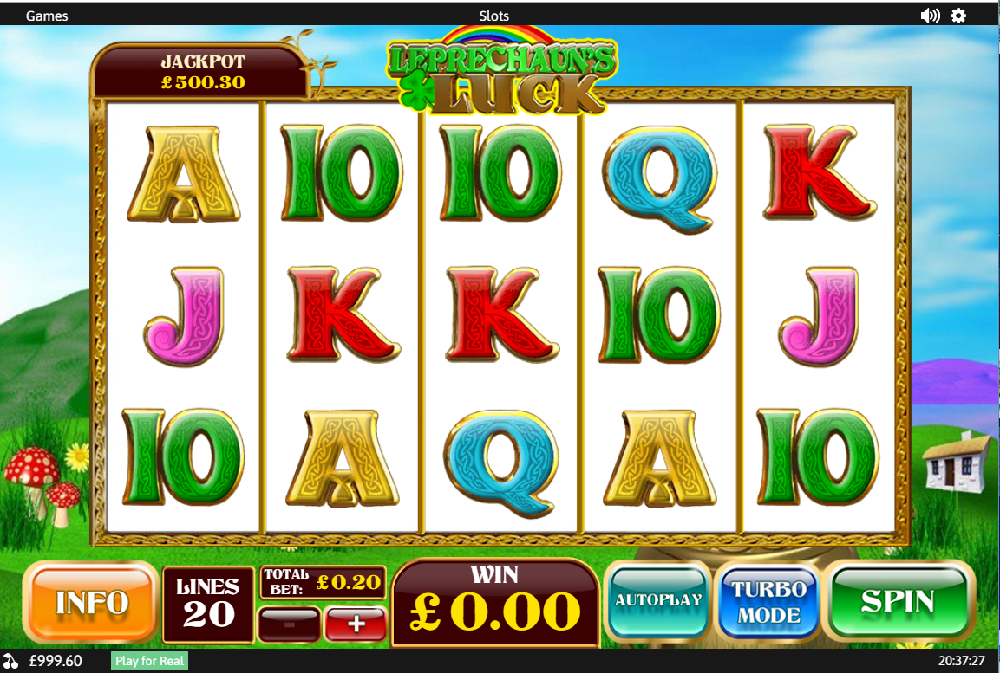

Hardworking, dedicated, self motivated, logical and quick learner who has over 15 years professional experience and still loves software development.
University studied though love to self learn and progress organically
I carried out a design refresh of the website 2involve.org.za, an South African non-profit company.
2INVOLVE was formed to advise and assist in the transformation of the criminal justice system, both in South Africa and beyond, with a view to improving community safety and reducing crime
Server developer of this tech lead start up, attempting to disrupt the self storage industry.
Responsible for technology architecture, decisions and server side coding in PHP utilising the Symfony framework
Member of a team focused on developing tools and processes to automate and accelerate creating gambling games quicker.
Maintained and enhanced components within existing in-house game based on Google Web Toolkit / PlayN technology, developed in Java.
Maintained and enhanced a game maths UI editor, front end is JavaScript (Angular, JQuery), back end Java 8 (Spring).
Added features to a generic game engine developed in Java 8.
The team’s agile Scrum Master leading the development team’s agile practices.
Lead Flash development team, ensuring best practices and working with other teams within the production pipeline.
Developed several web applications in PHP that was used by QA and developers. Including a custom Flash build and version application; several games lobbies for different client platforms; and modified open source wiki and bug tracking applications to fit our requirements.
Undertook a solo project to build a full gaming platform (Remote Gaming Server) which ran existing gaming engines and interfaced with external APIs for wallet transactions and RNG. This was built in Java.
Joined a team building games in pure Javascript and during developing games helped maintain a custom framework.
Joined a team that created a large slot and rendering framework on top of the Google Web Toolkit / PlayN technology, and developed slots using this technology.
Flash DeveloperDeveloped slot frameworks and completed many slot games, integrating into several client’s platforms and APIs.
The company’s IT support manager for several years maintaining the Windows server, web server and workstations.
Hired and managed dedicated IT staff.

Started as a junior programmer during my university Degree. Learning and programming Adobe Flash, creating new Flash educational and gambling games.
Developed a J2ME quiz game for BBC Bitesize, which was made available for a number of popular Nokia devices at the time.
Developed Flash gambling games for Coral and other gambling websites.
Degree focused on software development
I have worked with Alan in Ash Gaming now for a number of years and I believe him to be extremely adaptable at using various technologies and languages. He is always willing to take on projects that may challenge him and always ensures he get up to speed using them. On many occasions he not be provided the necessary documentation or proper handover however this has not phased him which I believe shows he to be a strong character and person who is confident in their own abilities. One of Alan's main achievements within Ash Gaming was to define and improve the release procedure for or games which he did a fantastic job of and we are still using currently. Full credit to him!
Alan is an innovator, constantly questioning and trying to improve on systems he develops - and even ones that he doesn't. Never one to settle for mediocrity, the phrase 'work smarter not harder' epitomises Alan, although he is a hard worker his eternal quest to improve upon process saves valuable time in the long run not just for himself, but for all those involved. His technical skill borders on genius and i have often been blown away by his developments and creative solutions. As a manger he gives his team the room to grow and develop while nurturing them from afar. I wish him the best in everything he does - although he does not need it.